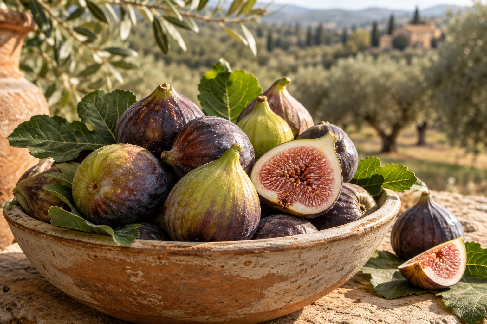
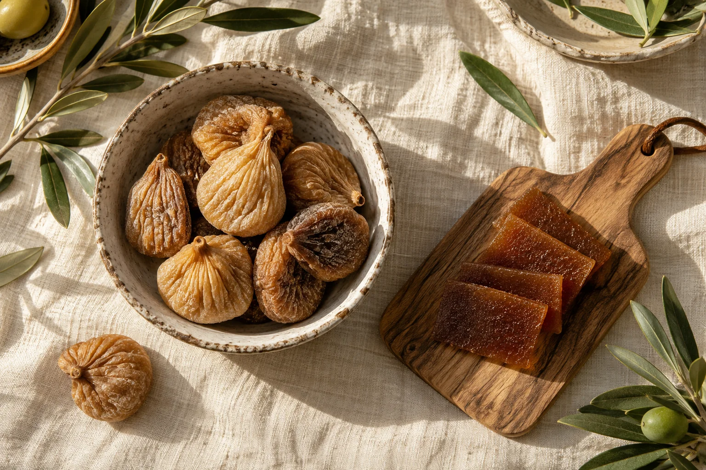
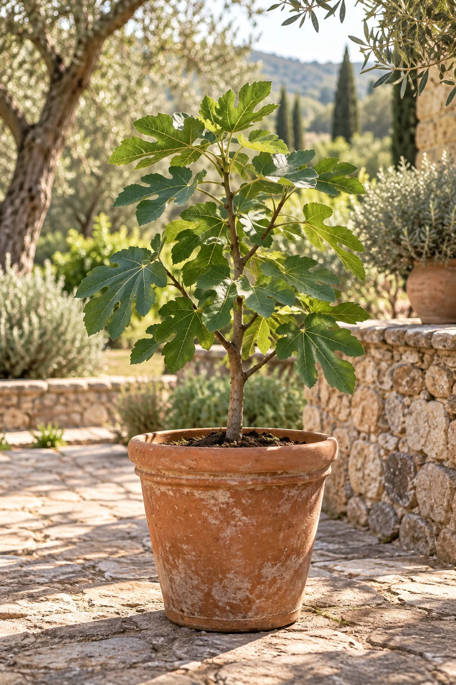

خيرات الموسم
التين الطازج
01من الغصن، في وقته الجميل. ثمار تُقطف وتُفرز يدويًا بعناية.
السعر والتوفر عند الطلب
لأن أجمل ما في الأرض، يستحق أن يصل إليك.
تينٌ نعتني به من الغصن، وخيراتٌ تحمل أصالة الجنوب
وكرم أهله… هذه حكاية النادرية.

صورة تعبيريةللخيرات… طعم آخر هنا.
للمائدة، للضيافة، ولركنٍ أخضر في بيتك.
اختر ما تحب، ودع الباقي علينا.
من الغصن، في وقته الجميل. ثمار تُقطف وتُفرز يدويًا بعناية.

من المونةحلاوة التين في صورتها الأصيلة. رفيق القهوة ولحظات الضيافة.
نكهة غنية تمنح فطورك ووصفاتك وحلوياتك لمسة مختلفة.

ازرع حكايتكابدأ حكايتك مع الزراعة. شتلات نساعدك على اختيار الأنسب منها.
خطوة صغيرة نحو شجرتك القادمة. تُنسَّق حسب موسم التقليم.
اختر من خيراتنا، واستفسر عن تنسيق تغليف يليق بمن تحب.
كل موسم له خيراته. نؤكد الأسعار والأحجام والتوفر معك قبل الطلب. الصور تعبيرية وليست تصويرًا للمنتجات الفعلية.
في الفرعين، بين مرتفعات أحد رفيدة، تنمو حكايتنا مع شجرة التين. نعتني بها من أول ورقة إلى آخر ثمرة، ونؤمن أن الجودة تبدأ من صبر المزارع وحبّه لأرضه.
النادرية مزرعة ومشتل، ومساحة نشاركك فيها ما نحب: ثمارًا طيبة، وغرسًا ينمو معك، وتفاصيل تحمل روح الجنوب.
أول شجرة في حديقتك؟ أو إضافة جديدة لمزرعتك؟
مع شتلات وعُقل النادرية، نساعدك تبدأ الخطوة الأولى.
تجربة بسيطة، وتواصل مباشر مع أهل المزرعة.
تصفّح الثمار والمونة والشتلات، واجمع اختياراتك في قائمة واحدة.
أرسل قائمتك عبر واتساب لنتفق على الكميات والأسعار والتوفر.
ننسق الاستلام أو التوصيل حسب منطقتك، ونجهّز طلبك بعناية.
أضف المنتجات التي تعجبك إلى قائمة طلبك، ثم راجع الكميات وأكمل عبر واتساب. نؤكد معك التوفر والسعر والوزن أو حجم الشتلة وطريقة الاستلام قبل تأكيد الطلب.
التين الطازج منتج موسمي، ويتغير توفره بحسب القطف والنضج. راسلنا لمعرفة المتاح حاليًا، ويمكنك أيضًا الاستفسار عن القطين وعجينة التين.
ننسق التوصيل والشحن حسب موقعك ونوع المنتج والكمية. اذكر مدينتك في قائمة الطلب لنوضح لك الخيارات والتكلفة قبل التأكيد.
يا مرحبًا بك. الزيارة بالتنسيق المسبق؛ تواصل معنا لنتفق على الموعد ونشاركك الموقع الدقيق للمزرعة.
أخبرنا بمنطقتك ومكان الزراعة، سواء في الأرض أو في أصيص. نساعدك في اختيار الشتلة أو العُقلة المناسبة ونوضح لك تفاصيل العناية عند الطلب.
نعم، يمكنك التواصل لتنسيق كميات المحلات والمناسبات والهدايا. أرسل الكمية التقريبية والتاريخ المطلوب، ونؤكد لك ما يمكن توفيره.
لطلبك، لزيارتك، أو حتى لسؤال عن شجرة تين.
يسعدنا أن نكون جزءًا من يومك.